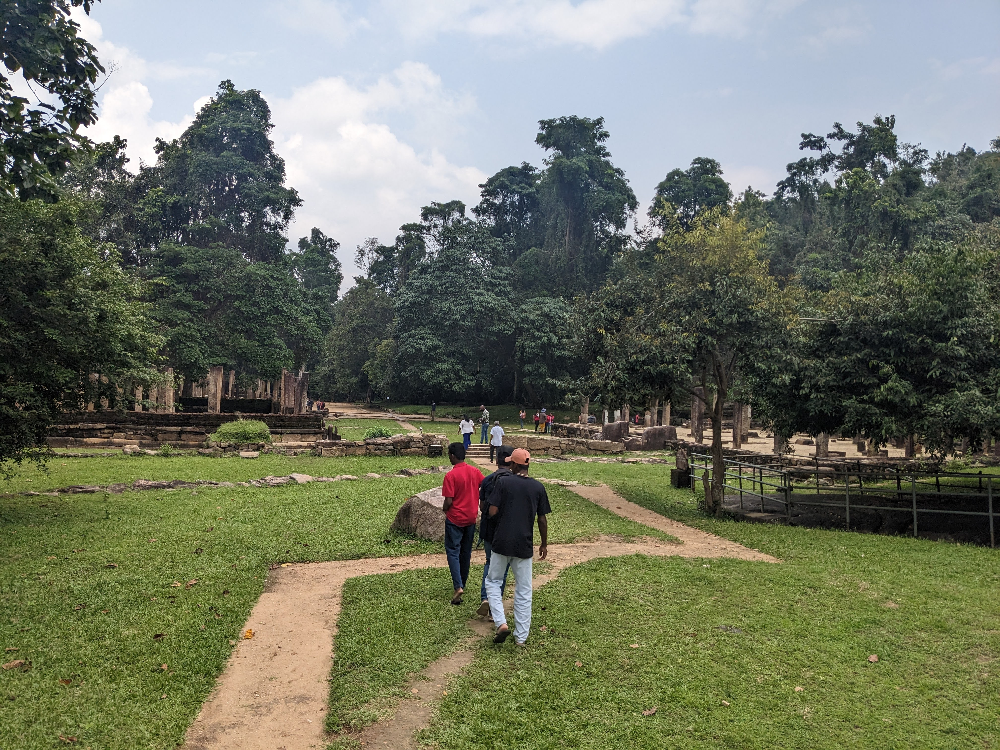

Rajagala (The Monarch's Rock), commonly Rassaagala or Rajagalathenna, is a rugged and heavily forested mountain situated 1,038 feet (316 m) above sea level, in a sparsely populated part of Eastern Province,
Sri Lanka which has an important archaeological value.The Rajagala archaeological site is only second to the Mihintale monastery in Anuradhapura and it spreads over 1,600 acres (650 ha; 2.5 sq mi). It consists more than 600 prehistoric ruins, monuments and artifacts, and nearly 100 of them are ancient stupas.
The Rajagala archaeological site is only second to the Mihintale monastery in Anuradhapura and it spreads over 1,600 acres.
It consists more than 600 prehistoric ruins, monuments and artifacts, and nearly 100 of them are ancient stupas.
ANCIENT & BEAUTIFUL PHOTO'S
Rajagalathenna or Rajagala Temple known in
ancient times as the Girikumbhila
Temple and it is situated half-way up the mountain.
Once it was a great monastery patronized
by the kings and princes of Ruhuna and Rajarata.
OUR PHOTO'S
Rajagalathenna or Rajagala Temple known in
ancient times as the Girikumbhila
Temple and it is situated half-way up the mountain.
Once it was a great monastery patronized
by the kings and princes of Ruhuna and Rajarata.
OUR VIDEO'S

Rajagalathenna or Rajagala Temple known in
ancient times as the Girikumbhila
Temple and it is situated half-way up the mountain.
Once it was a great monastery patronized
by the kings and princes of Ruhuna and Rajarata.
OUR TEAM
A/L 2024 ICT TEAM
Learning the value of teamwork and becoming an effective member of a team is
an important first step to developing leadership skills. For disconnected youth, especially those with
underlying disabilities, the development of these skills is critical.
REVIEWS AND COMMENT'S
Good And Bad Plans and accusations that came to us....... Good reviews and bad reviews
This Place Is very Good..I love it very much.
Emma Abigail
This Place Is very Good..I love it very much.
James Oliver
ABOUT US
The ICT syllabus at GCE (A/L) communicates core concepts of ICT covering both theoretical and practical usage of ICT.
This will also
strengthen student's awareness of the new trends and future directions of ICT.
Also this subject will provide an added advantage to
students by improving their soft skills, thereby enabling them to best fit into working environments.